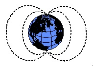

The Earth's Magnetic Field
 Ninety percent of the Earth's magnetic field looks like a magnetic field that would be generated from a dipolar magnetic source located at the center of the Earth and aligned with the Earth's rotational axis. This first order description of the Earth's magnetic field was first given by Sir William Gilbert in 1600. The strength of the magnetic field at the poles is about 60,000 nT. If this dipolar description of the field were complete, then the magnetic equator would correspond to the Earth's equator and the magnetic poles would correspond to the geographic poles. Alas, as we've come to expect from magnetism, such a simple description is not sufficient for analysis of the Earth's magnetic field.
The remaining 10% of the magnetic field can not be explained in terms of simple dipolar sources. Complex models of the Earth's magnetic field have been developed and are available. Shown below is a sample of one of these models generated by the USGS. The plot shows a map of declinations for a model of the magnetic field as it appeared in the year 1995*.
If the Earth's field were simply dipolar with the axis of the dipole oriented along the Earth's rotational axis, all declinations would be 0 degrees (the field would always point toward the north). As can be seen, the observed declinations are quite complex.
As observed on the surface of the earth, the magnetic field can be broken into three separate components.
- Main Field - This is the largest component of the magnetic field and is believed to be caused by electrical currents in the Earth's fluid outer core. For exploration work, this field acts as the inducing magnetic field.
- External Magnetic Field - This is a relatively small portion of the observed magnetic field that is generated from magnetic sources external to the earth. This field is believed to be produced by interactions of the Earth's ionosphere with the solar wind. Hence, temporal variations associated with the external magnetic field are correlated to solar activity.
- Crustal Field - This is the portion of the magnetic field associated with the magnetism of crustal rocks. This portion of the field contains both magnetism caused by induction from the Earth's main magnetic field and from remanent magnetization.
The figure shown above was constructed to emphasize characteristics of the main magnetic field. Although this portion of the field is in itself complex, it is understood quite well. Models of the main field are available and can be used for data reduction.
*As we'll describe later, another potential complication in using magnetic observations is that the Earth's magnetic field changes with time!